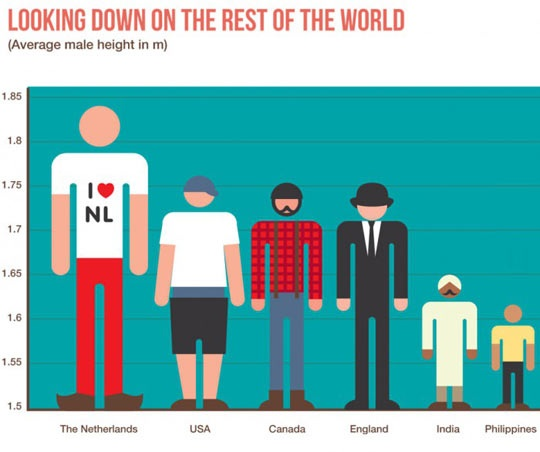

Introducción¶
¿Por qué aprender sobre visualización?¶
Porque un resultado no sirve si no puede comunicarse correctamente.
Porque una buena visualización dista de ser una tarea trivial.
Porque un ingenierio necesita producir excelentes gráficos (pero nadie enseña cómo).
No es exageración


Primeras visualizaciones¶
Campaña de Napoleón a Moscú (Charles Minard, 1889).¶

Mapa del cólera (John Snow, 1855).¶

¿Por qué utilizar gráficos para representar datos?¶
El 70 % de los receptores sensoriales del cuerpo humano está dedicado a la visión.
Cerebro ha sido entrenado evolutivamente para interpretar la información visual de manera masiva.
“The eye and the visual cortex of the brain form a massively parallel processor that provides the highest bandwidth channel into human cognitive centers” — Colin Ware, Information Visualization, 2004.
Cuarteto de ANSCOMBE¶
Considere los siguientes 4 conjuntos de datos.
¿Qué puede decir de los datos?
import numpy as np
import pandas as pd
import os
import matplotlib.pyplot as plt
%matplotlib inline
df = pd.read_csv(os.path.join("data","anscombe.csv"))
df
| x1 | y1 | x2 | y2 | x3 | y3 | x4 | y4 | |
|---|---|---|---|---|---|---|---|---|
| 0 | 10 | 8.04 | 10 | 9.14 | 10 | 7.46 | 8 | 6.58 |
| 1 | 8 | 6.95 | 8 | 8.14 | 8 | 6.77 | 8 | 5.76 |
| 2 | 13 | 7.58 | 13 | 8.74 | 13 | 12.74 | 8 | 7.71 |
| 3 | 9 | 8.81 | 9 | 8.77 | 9 | 7.11 | 8 | 8.84 |
| 4 | 11 | 8.33 | 11 | 9.26 | 11 | 7.81 | 8 | 8.47 |
| 5 | 14 | 9.96 | 14 | 8.10 | 14 | 8.84 | 8 | 7.04 |
| 6 | 6 | 7.24 | 6 | 6.13 | 6 | 6.08 | 8 | 5.25 |
| 7 | 4 | 4.26 | 4 | 3.10 | 4 | 5.39 | 19 | 12.50 |
| 8 | 12 | 10.84 | 12 | 9.13 | 12 | 8.15 | 8 | 5.56 |
| 9 | 7 | 4.82 | 7 | 7.26 | 7 | 6.42 | 8 | 7.91 |
| 10 | 5 | 5.68 | 5 | 4.74 | 5 | 5.73 | 8 | 6.89 |
df.describe()
| x1 | y1 | x2 | y2 | x3 | y3 | x4 | y4 | |
|---|---|---|---|---|---|---|---|---|
| count | 11.000000 | 11.000000 | 11.000000 | 11.000000 | 11.000000 | 11.000000 | 11.000000 | 11.000000 |
| mean | 9.000000 | 7.500909 | 9.000000 | 7.500909 | 9.000000 | 7.500000 | 9.000000 | 7.500909 |
| std | 3.316625 | 2.031568 | 3.316625 | 2.031657 | 3.316625 | 2.030424 | 3.316625 | 2.030579 |
| min | 4.000000 | 4.260000 | 4.000000 | 3.100000 | 4.000000 | 5.390000 | 8.000000 | 5.250000 |
| 25% | 6.500000 | 6.315000 | 6.500000 | 6.695000 | 6.500000 | 6.250000 | 8.000000 | 6.170000 |
| 50% | 9.000000 | 7.580000 | 9.000000 | 8.140000 | 9.000000 | 7.110000 | 8.000000 | 7.040000 |
| 75% | 11.500000 | 8.570000 | 11.500000 | 8.950000 | 11.500000 | 7.980000 | 8.000000 | 8.190000 |
| max | 14.000000 | 10.840000 | 14.000000 | 9.260000 | 14.000000 | 12.740000 | 19.000000 | 12.500000 |
¿Por qué es un ejemplo clásico?
for i in range(1, 4 + 1):
x = df.loc[:, f"x{i}"].values
y = df.loc[:, f"y{i}"].values
slope, intercept = np.polyfit(x, y, 1)
print(f"Grupo {i}:\n\tTiene pendiente {slope:.2f} e intercepto {intercept:.2f}.\n")
Grupo 1:
Tiene pendiente 0.50 e intercepto 3.00.
Grupo 2:
Tiene pendiente 0.50 e intercepto 3.00.
Grupo 3:
Tiene pendiente 0.50 e intercepto 3.00.
Grupo 4:
Tiene pendiente 0.50 e intercepto 3.00.
groups = range(1, 4 + 1)
x_columns = [col for col in df if "x" in col]
x_aux = np.arange(
df.loc[:, x_columns].values.min() - 1,
df.loc[:, x_columns].values.max() + 2
)
fig, axs = plt.subplots(nrows=2, ncols=2, figsize=(16, 8), sharex=True, sharey=True)
fig.suptitle("Cuarteto de Anscombe")
for i, ax in zip(groups, axs.ravel()):
x = df.loc[:, f"x{i}"].values
y = df.loc[:, f"y{i}"].values
m, b = np.polyfit(x, y, 1)
ax.plot(x, y, 'o')
ax.plot(x_aux, m * x_aux + b, 'r', lw=2.0)
ax.set_title(f"Grupo {i}")
Teoría¶
Sistema visual humano¶
Buenas noticias¶
Gráficos entregan información que la estadística podría no revelar.
Despliegue visual es esencial para comprensión.
Malas noticias¶
La atención es selectiva y puede ser fácilmente engañada.

Consejos generales¶
Noah Illinsky, en su charla “Cuatro pilatres de la visualización” (es, en), presenta buenos consejos sobre cómo realizar una correcta visualización:
Propósito
Información/Contenido
Codificación/Estructura
Formato
Es altamente aconsejable ver el video, pero en resumen:
Propósito o público tiene que ver con para quién se está preparando la viz y que utilidad se le dará. Es muy diferente preparar un gráfico orientado a información y toma de decisiones.
Información/Contenido se refiere a contar con la información que se desea mostrar, en el formato necesario para su procesamiento.
Codificación/Estructura tiene que ver con la selección correcta de la codificación y estructura de la información.
Formato tiene que ver con la elección de fuentes, colores, tamaños relativos, etc.
Lo anterior indica que una visualización no es el resultado de unos datos. Una visualización se diseña, se piensa, y luego se buscan fuentes de información apropiadas.
Elementos para la creación de una buena visualización¶
Honestidad: representaciones visuales no deben engañar al observador.
Priorización: dato más importante debe utilizar elemento de mejor percepción.
Expresividad: datos deben utilizar elementos con atribuciones adecuadas.
Consistencia: codificación visual debe permitir reproducir datos.
El principio básico a respetar es que a partir del gráfico uno debe poder reobtener fácilmente los datos originales.
Honestidad¶
El ojo humano no tiene la misma precisión al estimar distintas atribuciones:
Largo: Bien estimado y sin sesgo, con un factor multiplicativo de 0.9 a 1.1.
Área: Subestimado y con sesgo, con un factor multiplicativo de 0.6 a 0.9.
Volumen: Muy subestimado y con sesgo, con un factor multiplicativo de 0.5 a 0.8.
Resulta inadecuado realizar gráficos de datos utilizando áreas o volúmenes si no queda claro la atribución utilizada.
Una pseudo-excepción la constituyen los pie-chart o gráficos circulares, porque el ojo humano distingue bien ángulos y segmentos de círculo, y porque es posible indicar los porcentajes respectivos.
## Example from https://matplotlib.org/3.1.1/gallery/pie_and_polar_charts/pie_features.html#sphx-glr-gallery-pie-and-polar-charts-pie-features-py
# Pie chart, where the slices will be ordered and plotted counter-clockwise:
labels = 'Frogs', 'Hogs', 'Dogs', 'Logs'
sizes = [15, 30, 45, 10]
explode = (0, 0.1, 0, 0) # only "explode" the 2nd slice (i.e. 'Hogs')
fig1, ax1 = plt.subplots(figsize=(8, 8))
ax1.pie(
sizes,
explode=explode,
labels=labels,
autopct='%1.1f%%',
shadow=True,
startangle=90
)
ax1.axis('equal') # Equal aspect ratio ensures that pie is drawn as a circle.
plt.show()
Priorización¶
Dato más importante debe utilizar elemento de mejor percepción.
np.random.seed(42)
N = 31
x = np.arange(N)
y1 = 80 + 20 *x / N + 5 * np.random.rand(N)
y2 = 75 + 25 *x / N + 5 * np.random.rand(N)
fig, axs = plt.subplots(2, 2, sharex=True, sharey=True, figsize=(16,8))
axs[0][0].plot(x, y1, 'ok')
axs[0][0].plot(x, y2, 'sk')
axs[0][1].plot(x, y1, 'ob')
axs[0][1].plot(x, y2, 'or')
axs[1][0].plot(x, y1, 'ob')
axs[1][0].plot(x, y2, '*k')
axs[1][1].plot(x, y1, 'sr')
axs[1][1].plot(x, y2, 'ob')
plt.show()
Elementos de mejor percepción¶
No todos los elementos tienen la misma percepción a nivel del sistema visual.
En particular, el color y la forma son elementos preatentivos: un color distinto o una forma distinta se reconocen de manera no conciente.
Ejemplos de elementos preatentivos.
¿En que orden creen que el sistema visual humano puede estimar los siguientes atributos visuales:
Color
Pendiente
Largo
Ángulo
Posición
Área
Volumen
El sistema visual humano puede estimar con precisión siguientes atributos visuales:
Posición
Largo
Pendiente
Ángulo
Área
Volumen
Color
Utilice el atributo que se estima con mayor precisión cuando sea posible.
Colormaps¶
Puesto que la percepción del color tiene muy baja precisión, resulta inadecuado tratar de representar un valor numérico con colores.
¿Qué diferencia numérica existe entre el verde y el rojo?
¿Que asociación preexistente posee el color rojo, el amarillo y el verde?
¿Con cuánta precisión podemos distinguir valores en una escala de grises?

Algunos ejemplos de colormaps
import matplotlib.cm as cm
from scipy.stats import multivariate_normal
x, y = np.mgrid[-3:3:.025, -2:2:.025]
pos = np.empty(x.shape + (2,))
pos[:, :, 0] = x
pos[:, :, 1] = y
z1 = multivariate_normal.pdf(
pos,
mean=[-1.0, -1.0],
cov=[[1.0, 0.0], [0.0, 0.1]]
)
z2 = multivariate_normal.pdf(
pos,
mean=[1.0, 1.0],
cov=[[1.5, 0.0], [0.0, 0.5]]
)
z = 10 * (z1 - z2)
fig, axs = plt.subplots(2, 2, figsize=(16, 8), sharex=True, sharey=True)
cmaps = [cm.rainbow, cm.autumn, cm.coolwarm, cm.gray]
for i, ax in zip(range(len(cmaps)), axs.ravel()):
im = ax.imshow(z, interpolation='bilinear', origin='lower',cmap=cmaps[i], extent=(-3, 3, -2, 2))
fig.colorbar(im, ax=ax)
fig.show()
Consejo: evite mientras pueda los colormaps. Por ejemplo, utilizando contour plots.
fig, axs = plt.subplots(2, 2, figsize=(20, 12), sharex=True, sharey=True)
cmaps = [cm.rainbow, cm.autumn, cm.coolwarm, cm.gray]
countour_styles = [
{"cmap": cm.rainbow},
{"cmap": cm.rainbow},
{"colors": "k", "linestyles": "solid"},
{"colors": "k", "linestyles": "dashed"},
]
for i, ax in zip(range(len(cmaps)), axs.ravel()):
cs = ax.contour(x, y, z, 11, **countour_styles[i])
if i > 0:
ax.clabel(cs, fontsize=9, inline=1)
if i == 3:
ax.grid(alpha=0.5)
fig.show()

Sobre la Expresividad¶
Mostrar los datos y sólo los datos.
Los datos deben utilizar elementos con atribuciones adecuadas: Not all data is born equal.
Clasificación de datos:
Datos Cuantitativos: Cuantificación absoluta.
Cantidad de azúcar en fruta: 50 [gr/kg]
Operaciones =, \(\neq\), <, >, +, −, * , /
Datos Posicionales: Cuantificación relativa.
Fecha de cosecha: 1 Agosto 2014, 2 Agosto 2014.
Operaciones =, \(\neq\), <, >, +, −
Datos Ordinales: Orden sin cuantificación.
Calidad de la Fruta: baja, media, alta, exportación.
Operaciones =, \(\neq\), <, >
Datos Nominales: Nombres o clasificaciones
Frutas: manzana, pera, kiwi, …
Operaciones \(=\), \(\neq\)
Ejemplo: Terremotos. ¿Que tipos de datos tenemos?
Ciudad más próxima
Año
Magnitud en escala Richter
Magnitud en escala Mercalli
Latitud
Longitud
Contraejemplo: Compañías de computadores.
Companía |
Procedencia |
|---|---|
MSI |
Taiwan |
Asus |
Taiwan |
Acer |
Taiwan |
HP |
EEUU |
Dell |
EEUU |
Apple |
EEUU |
Sony |
Japon |
Toshiba |
Japon |
Lenovo |
Hong Kong |
Samsung |
Corea del Sur |
brands = {
"MSI": "Taiwan",
"Asus": "Taiwan",
"Acer": "Taiwan",
"HP": "EEUU",
"Dell": "EEUU",
"Apple": "EEUU",
"Sony": "Japon",
"Toshiba": "Japon",
"Lenovo": "Hong Kong",
"Samsung": "Corea del Sur"
}
C2N = {"Taiwan": 1, "EEUU": 2, "Japon": 3, "Hong Kong": 4, "Corea del Sur": 7}
x = np.arange(len(brands.keys()))
y = np.array([C2N[val] for val in brands.values()])
width = 0.35 # the width of the bars
fig, ax = plt.subplots(figsize=(16, 8))
rects1 = ax.bar(x, y, width, color='r')
# add some text for labels, title and axes ticks
ax.set_xticks(x + 0.5*width)
ax.set_xticklabels(brands.keys(), rotation="90")
ax.set_yticks(list(C2N.values()))
ax.set_yticklabels(C2N.keys())
plt.xlim([-1,len(x)+1])
plt.ylim([-1,y.max()+1])
plt.show()
Clasificación de datos:
Datos Cuantitativos: Cuantificación absoluta.
Cantidad de azúcar en fruta: 50 [gr/kg]
Operaciones =, \(\neq\), <, >, +, −, * , /
Utilizar posición, largo, pendiente o ángulo
Datos Posicionales: Cuantificación relativa.
Fecha de cosecha: 1 Agosto 2014, 2 Agosto 2014.
Operaciones =, \(\neq\), <, >, +, −
Utilizar posición, largo, pendiente o ángulo
Datos Ordinales: Orden sin cuantificación.
Calidad de la Fruta: baja, media, alta, exportación.
Operaciones =, \(\neq\), <, >
Utilizar marcadores diferenciados en forma o tamaño, o mapa de colores apropiado
Datos Nominales: Nombres o clasificaciones
Frutas: manzana, pera, kiwi, …
Operaciones \(=\), \(\neq\)
Utilizar forma o color
Consistencia¶
La codificación visual debe permitir reproducir datos. Para ello debemos:
Graficar datos que sean comparables.
Utilizar ejes escalados adecuadamente.
Utilizar la misma codificación visual entre gráficos similares.
Utilizar ejes escalados adecuadamente.¶
x = list(range(1, 13))
y = 80 + 20 * np.random.rand(12)
x_ticks = list("EFMAMJJASOND")
fig, (ax1, ax2) = plt.subplots(ncols=2, figsize=(20, 8))
ax1.plot(x, y, 'o-')
ax1.set_xticks(x)
ax1.set_xticklabels(x_ticks)
ax1.grid(alpha=0.5)
ax2.plot(x, y,'o-')
ax2.set_xticks(x)
ax2.set_xticklabels(x_ticks)
ax2.set_ylim([0, 110])
ax2.grid(alpha=0.5)
fig.show()
Utilizar la misma codificación visual entre gráficos similares¶
x = np.linspace(0, 1, 50)
f1 = x ** 2 + .2 * np.random.rand(50)
g1 = x + .2 * np.random.rand(50)
f2 = 0.5 - 0.2 * x + .2 * np.random.rand(50)
g2 = x ** 3 + .2 * np.random.rand(50)
fig, (ax1, ax2) = plt.subplots(nrows=2, figsize=(20, 12), sharex=True)
ax1.set_title("Antes de MAT281")
ax1.plot(x, f1, 'b', label='Chile', lw=2.0)
ax1.plot(x, g1, 'g:', label='OECD', lw=2.0)
ax1.legend(loc="upper left")
ax2.set_title("Despues de MAT281")
ax2.plot(x, f2, 'g:', label='Chile', lw=2.0)
ax2.plot(x, g2, 'b', label='OECD', lw=2.0)
ax2.legend()
fig.show()
Python Landscape¶
Para empezar, PyViz es un sitio web que se dedica a ayudar a los usuarios a decidir dentro de las mejores herramientas de visualización open-source implementadas en Python, dependiendo de sus necesidades y objetivos. Mucho de lo que se menciona en esta sección está en detalle en la página web del proyecto PyViz.
Algunas de las librerías de visualización de Python más conocidas son:

Este esquema es una adaptación de uno presentado en la charla The Python Visualization Landscape realizada por Jake VanderPlas en la PyCon 2017.
Cada una de estas librerías fue creada para satisfacer diferentes necesidades, algunas han ganado más adeptos que otras por uno u otro motivo. Tal como avanza la tecnología, estas librerías se actualizan o se crean nuevas, la importancia no recae en ser un experto en una, si no en saber adaptarse a las situaciones, tomar la mejor decicisión y escoger según nuestras necesidades y preferencias. Por ejemplo, matplotlib nació como una solución para imitar los gráficos de MATLAB (puedes ver la historia completa aquí), manteniendo una sintaxis similar y con ello poder crear gráficos estáticos de muy buen nivel.
Debido al éxito de matplotlib en la comunidad, nacen librerías basadas ella. Algunos ejemplos son:
seabornse basa enmatpĺotlibpero su nicho corresponde a las visualizaciones estadísticas.ggpyuna suerte de copia aggplot2perteneciente al lenguaje de programaciónR.networkxvisualizaciones de grafos.pandasno es una librería de visualización propiamente tal, pero utiliza amatplotplibcomo bakcned en los métodos con tal de crear gráficos de manera muy rápida, e.g.pandas.DataFrame.plot.bar()
Por otro lado, con tal de crear visualizaciones interactivas aparecen librerías basadas en javascript, algunas de las más conocidas en Python son:
bokehtiene como objetivo proporcionar gráficos versátiles, elegantes e incluso interactivos, teniendo una gran performance con grandes datasets o incluso streaming de datos.plotlyvisualizaciones interactivas que en conjunto aDash(de la misma empresa) permite crear aplicaciones webs, similar ashinydeR.
D3.js a pesar de estar basado en javascript se ha ganado un lugar en el corazón de toda la comunidad, debido a la ilimitada cantidad de visualizaciones que son posibles de hacer, por ejemplo, la malla interactiva que hizo un estudiante de la UTFSM está hecha en D3.js.
De las librerías más recientes está Altair, que consiste en visualizaciones declarativas (ya lo veremos en el próximo laboratorio). Construída sobre Vega-Lite, a su vez que esté está sobre Vega y este finalmente sobre D3.js. Altair permite crear visualizaciones estáticas e interactivas con pocas líneas de código, sin embargo, al ser relativamente nueva, aún existen funcionalidades en desarrollo o que simplemente aún no existen en esta librería pero en otras si.
Clasificación¶
En lo concierne a nosotros, una de las principales clasificaciones para estas librerías es si crean visualizaciones estática y/o interactivas. La interactividad es un plus que permite adentrarse en los datos en distintos niveles, si agregamos que ciertas librerías permiten crear widgets (algo así como complementos a las visualizaciones) su potencial aumenta. Por ejemplo, un widget podría ser un filtro que permita escoger un país; en una librería estática tendrías que crear un gráfico por cada país (o combinación de países) lo cual no se hace escalable y cómodo para trabajar.
Spoilers¶
Las próximas clases se centrarán en matplotlib y Seaborn, dado que son buenos exponentes de visualización imperativa y declarativa, respectivamente.
Finalmente, siempre hay que tener en consideración la manera en que se compartirán las visualizaciones, por ejemplo, si es para un artículo científico bastaría que fuese de buena calidad y estático. Si es para una plataforma web es necesario que sea interactivo, aquí es donde entran en juego los dashboards, que permiten la exploración de datos de manera interactiva. En Python existen librerías como Dash o Panel, sin embargo, en el mundo empresarial se suele utilizar software dedicado a esto, como Power BI o Tableau.